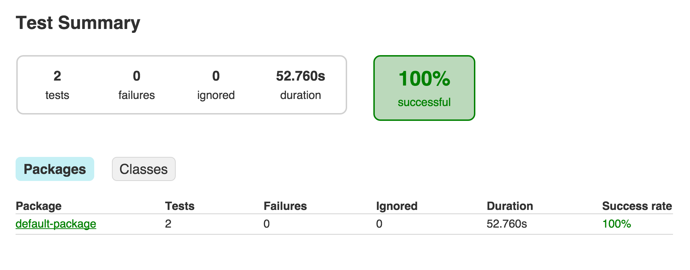
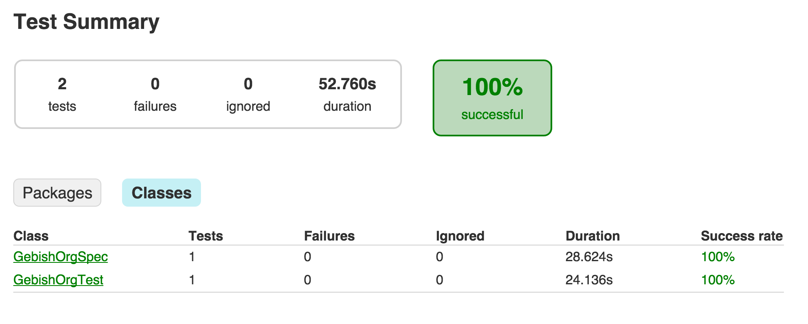

Geb + Spock + Gradle
以 Gradle 建置工具示範 Geb + Spock 的測試流程整合，此範例是來官方範例簡化，以便於理解。
範例：build.gradle
ext {
drivers = ["firefox"]
ext {
groovyVersion = '2.4.1'
gebVersion = '0.12.2'
seleniumVersion = '2.46.0'
}
}
apply plugin: "groovy"
repositories {
mavenCentral()
}
dependencies {
// 設定與 Spock相關的lib
testCompile "org.gebish:geb-spock:$gebVersion"
testCompile("org.spockframework:spock-core:1.0-groovy-2.4") {
exclude group: "org.codehaus.groovy"
}
// 設定 Groovy lib
testCompile "org.codehaus.groovy:groovy-all:$groovyVersion"
// Drivers
testCompile "org.seleniumhq.selenium:selenium-firefox-driver:$seleniumVersion"
}
// 一次宣告多個 Task
drivers.each { driver ->
task "${driver}Test"(type: Test) {
// e.g. firefoxTest
reports {
html.destination = reporting.file("$name/tests")
junitXml.destination = file("$buildDir/test-results/$name")
}
// 每次都要執行
outputs.upToDateWhen { false }
systemProperty "geb.build.reportsDir", reporting.file("$name/geb")
systemProperty "geb.env", driver
}
}
test {
dependsOn drivers.collect { tasks["${it}Test"] }
enabled = false
}
範例：src/test/resources/GebConfig.groovy
import org.openqa.selenium.firefox.FirefoxDriver
waiting {
timeout = 2
}
environments {
firefox {
driver = { new FirefoxDriver() }
}
}
baseUrl = "http://gebish.org"
分別定義兩個 Page 物件，分別對應 Geb 首頁與操作手冊頁。
範例：src/test/groovy/GebishOrgHomePage.groovy（首頁）
import geb.Page
// Geb 首頁
class GebishOrgHomePage extends Page {
static at = { title == "Geb - Very Groovy Browser Automation" }
static content = {
manualsMenu { module MenuModule, $("#header-content ul li", 0) }
}
}
範例：src/test/groovy/TheBookOfGebPage.groovy（使用手冊）
import geb.Page
// Geb 使用手冊頁面
class TheBookOfGebPage extends Page {
static at = { title.startsWith("The Book Of Geb") }
}
使用 Spock 定義一個測試案例，驗證位於首頁的使用手冊 Menu 連結可以用正常使用。
範例：src/test/groovy/GebishOrgSpec.groovy
import geb.spock.GebReportingSpec
class GebishOrgSpec extends GebReportingSpec {
def "can get to the current Book of Geb"() {
when:
to GebishOrgHomePage
and: // 點擊 Manuals 的 Menu 的連結
interact {
moveToElement(manualsMenu.toggle)
}
then: // 點擊最新版本的 Manuals 的連結
manualsMenu.links[0].text().endsWith("- CURRENT")
when:
manualsMenu.links[0].click()
then:
at TheBookOfGebPage
}
}
範例：src/test/groovy/MenuModule.groovy
import geb.Module
class MenuModule extends Module {
static content = {
toggle { children("span") }
links { $('.link-list li a') }
}
}
執行 Gradle 的 test 任務時，就會執行 Geb 測試程式。
gradle test
報表
測試結果也會整合在輸出報表。
Package

Classes

整合到專案自動化建置的 Geb 測試程式，會成為專案自動化測試流程的一部份，在使用 Jenkins CI 持續整合時，也順帶完成瀏覽器自動化測試。